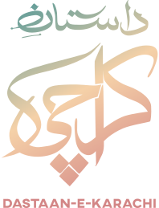
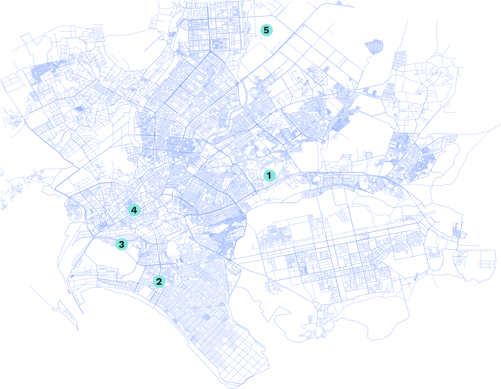
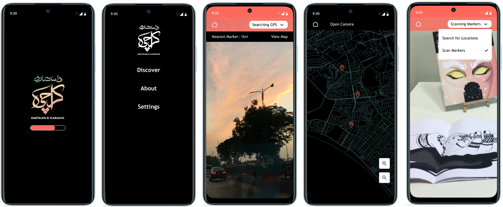
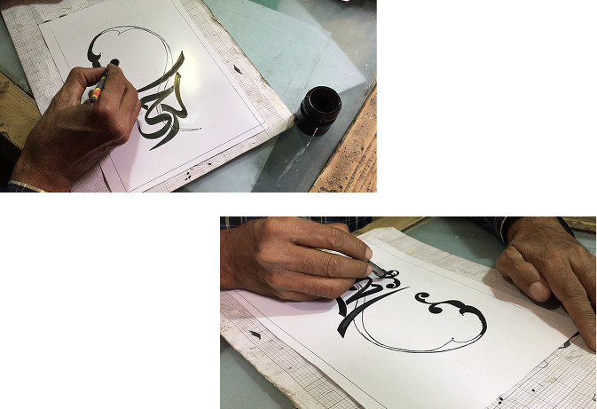
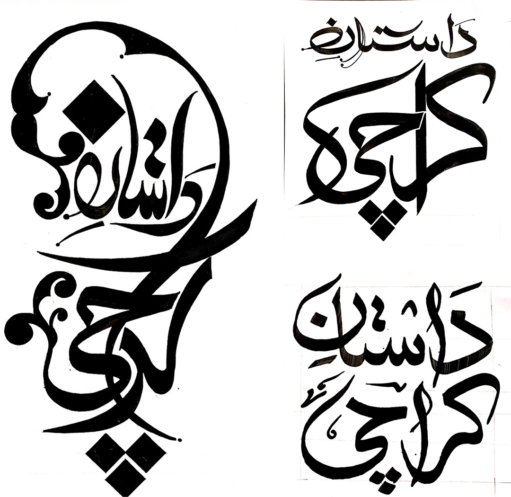

Dastaan-e-Karachi
Augmented Reality Platform for Intangible Heritage
Augmented reality · Unity · Vuforia · Marker-based AR · Location-based AR · Cultural heritage · Motion design
*Awarded best thesis at Habib University in 2018.
Company:
-
Role:
-
Year:
2018
Team:
Fatin Nawaz

Karachi's folklore and intangible heritage are fading, and few young people encounter these stories.
To make folklore accessible we developed an AR platform that preserves folklore.
Using the Unity engine and Vuforia plugin, we built marker-based and location-based AR.

Karsaz Bride Marker
Designed a zine of AR markers.
To enable marker-based AR unique markers were designed and compiled in a zine.

This was done for selected stories & locations:
1. The Ghost Bride of Karsaz Bride
2. Abdullah Shah Ghazi Shrine
3. Moriro and the Mach
4. Ram in Aram Bagh
5. The shrine and crocodiles of Mangopir

Interface Design

Created a calligraphic identity for the platform.

Calligraphic process

Calligraphy samples for the logo
Technical Development
Unity Engine
Building the interface and loading animations
Vuforia
A plugin to Integrate augmented reality functionality